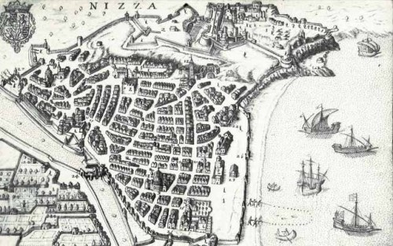

INFORMACIÓN HISTÓRICA

- Niza por años ha sido mas conocida como la capital de la Costa Azul, no solo por sus maravillosas playas y su clima tropical; si no también por su historia, su cultura, su arte, sus eventos, su naturaleza, sus paisajes, entre otras maravillas de esta hermosa ciudad.
- Niza ha sido habitado desde hace 400.000 a.C en Terra Amata; en un principio se asentaron dos grupos humanos, los Ligures y los Celtas. posteriormente los fócidos se instalaron en Massilia, en donde establecieron puntos de comercio en la costa de Niza. Esta colonia griega tiempo después seria atacada por diferentes tribus antes de que los Romanos tomen el poder de esta ciudad en 154 a.C. finalmente Niza sobrevive a las invasiones bárbaras de la caída del Imperio Romano en el siglo V. Cabe resaltar que el nombre de esta ciudad nace de la conmemoración a la diosa de la victoria (Nike).
- El comercio de Niza empezó a tomar fuerza durante la edad media, especialmente con Pisa y Génova; el poder paso a ser de los Condes de Provenza a la de Génova. Años después esta ciudad estuvo bajo la autoridad de los Condes de Anjou, sin embargo, en el siglo XIV este gobierno fue azotado por varias epidemias, las cuales provocaron una disminución de la población del momento. Ya pasado el tiempo, el pueblo de Niza se niega a reconocer a Louis d'Anjou y se entrega a Saboya; debido a esto se crea el condado de Niza, quien se convertiría en un importante defensa para evitar ser recuperado por los Condes de Provenza y luego los reyes de Francia. En el siglo XVI finalmente la ciudad de Niza se convirtió en una zona de amortiguación entre Francia y el Imperio Romano.
- Durante el renacimiento el comercio marítimo de Niza sigo creciendo, en especial con la Provenza y Liguria; esta ciudad en el siglo XVII estuvo cubierta de iglesias barrocas. En esta época Luis XIV anexó la ciudad y se proclamó Conde de Niza, durante su poder demolió la ciudadela y arrasó con las murallas, esto con el Tratado de Utrecht; debido a esto Francia devolvió el condado de Niza a los Saboya.
- La ciudad se moderniza y les da la bienvenida a los primeros turistas ingleses en el siglo XVIII. Años después el condado de Niza acoge a muchos contrarrevolucionarios; y durante el Imperio Romano esta ciudad pasa de mano a mano y sufre las decisiones del comercio Mediterráneo. Tiempo después llega el tratado de Paris, quien le concede Niza a Víctor Manuel I Rey de Cerdeña. Finalmente, los reyes sardos devolvieron Niza a Francia en 1860 tras un referéndum y Niza se convierte en una ciudad de ocio.
- En el siglo XX, Niza acogió a los grandes nombres de la literatura americana, luego a turistas de todo el mundo y con vacaciones pagadas de toda Francia. Tiempo después la ciudad sufre de las dos guerras mundiales, las cuales ayudaron a que tuvieran un mejor desarrollo, acogiendo a emigrantes.
fuente: https://www.cityzeum.com/ar/l-histoire-de-nice-dans-ses-grandes-lignes